통신선로산업기사 (2002-09-08 기출문제)
1과목: 디지털전자회로
1. 트랜지스터의 활성영역에서 베이스 접지시 전류증폭율 α가 0.98, 역포화 전류 Ico가 100[㎂], 베이스 전류가 IB = 10[㎃]일 때, 콜렉터 전류 Ic는?
- 495[㎃]
- 49.5[㎃]
- 4.9[㎂]
- 0.5[㎂]
(정답률: 알수없음)

2. 플립플롭을 구성하는데 주로 이용되는 회로는?
- 쌍안정 멀티바이브레이터
- 단안정 멀티바이브레이터
- 비안정 멀티바이브레이터
- 무안정 멀티바이브레이터
(정답률: 알수없음)
3. 다음중 그 값이 작을수록 좋은 것은?
- 증폭기 바이어스 회로의 안정계수
- 차동 증폭기의 동상신호 제거비(CMRR)
- 증폭기의 신호대 잡음비
- 정류기의 정류효율
(정답률: 알수없음)
4. 정논리회로에서의 다음 트랜지스터 회로의 기능은?
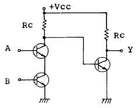
- OR회로
- AND회로
- NAND회로
- EOR회로
(정답률: 알수없음)
5. 전가산기(full adder)의 입출력 구조는?
- 입력 2개, 출력 2개
- 입력 3개, 출력 2개
- 출력 3개, 입력 2개
- 출력 3개, 입력 3개
(정답률: 알수없음)
6. 전원회로에서 무부하시 600[V], 부하시 500[V] 였다면 전압변동률은 얼마인가?
- 20%
- 30%
- 35%
- 45%
(정답률: 알수없음)
7. 다음 연산 증폭기에서 출력 전압의 크기는?
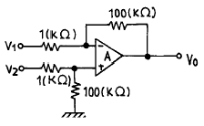
- Vo = 100(V2 - V1)
- Vo = V2 + V1
- Vo = 99(V1 - V2)
- Vo = V2 - V1
(정답률: 알수없음)
8. 다음 그림의 회로는 무슨 회로인가?
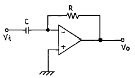
- 미분기
- 적분기
- 가산기
- 증폭기
(정답률: 알수없음)
9. 수정발진회로가 갖는 가장 큰 특징은?
- 잡음의 경감
- 출력의 증대
- 효율의 증대
- 발진주파수의 안정
(정답률: 알수없음)
10. 다음은 수정편의 리액턴스 특성이다. 발진에 이용될 주파수 범위는?
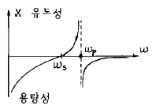
- ωS < ω < ωP
- ωP < ω
- ωS < ω
- ωS > ω > ωP
(정답률: 알수없음)
11. 변조도가 100[%]인 AM파의 출력 전력이 6[KW]라면 반송파 성분의 전력은 얼마인가?
- 2[KW]
- 4[KW]
- 8[KW]
- 12[KW]
(정답률: 알수없음)
12. 주파수 3[㎑]로 3[㎒]의 반송파를 주파수 변조하였을때 최대 주파수 편이가 ± 75[㎑]라면 소요 대역폭은?
- 225[㎑]
- 156[㎑]
- 150[㎑]
- 112.5[㎑]
(정답률: 알수없음)
13. 두개의 입력이 동시에 1 이 되었을 때에도 불확실한 출력상태가 되지 않도록 두개의 Flip-Flop을 사용한 회로는?
- RS F-F
- D F-F
- Master slave F-F
- T F-F
(정답률: 알수없음)
14. R-S Flip-Flop을 J-K Flip-Flop으로 만들고자 할 때 필요한 게이트(gate)는?
- OR gate 2개
- AND gate 2개
- NOR gate 2개
- NAND gate 2개
(정답률: 알수없음)
15. 다음 중 연산 증폭기의 특성과 관련 없는 것은?
- 높은 이득
- 낮은 CMRR
- 높은 입력 임피던스
- 낮은 출력 임피던스
(정답률: 알수없음)
16. 다음 부울대수식과 등가인 것은?
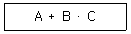
- A·B·(A+C)
- (A+B)·(A+C)
- (A+B)·A·C
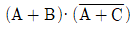
(정답률: 알수없음)
17. 발진이 생성될 수 있는 기본조건은?
- 회로의 증폭률이 최소 5 이상 필요하다.
- 증폭기에 부궤환회로를 부가한다.
- 공진결합회로가 필요하다.
- 증폭기에 정궤환회로를 부가한다.
(정답률: 알수없음)
18. PLL의 구성에 불필요한 것은?
- 위상검출기(PD)
- 전압제어 발진기(VCO)
- 저역통과필터(LPF)
- 자동주파수 제어(AFC)
(정답률: 알수없음)
19. 다음 논리 회로 중 팬 아웃(fan out)의 수가 많은 회로는?
- DTL 게이트
- TTL 게이트
- RTL 게이트
- DL 게이트
(정답률: 알수없음)
20. 다음 중 레지스터의 기능은?
- 펄스 발생기이다.
- 카운터의 대용으로 쓰인다.
- 회로를 동기시킨다.
- 데이터를 일시 저장한다.
(정답률: 알수없음)
2과목: 유선통신기기
21. PCM-24 방식에 있어서 1통화로의 부호와 비트(bits) 수는 어떻게 구성되어 있는가?
- 신호 7비트와 음성 1비트로 구성되어 있다.
- 신호 1비트와 음성 7비트로 구성되어 있다.
- 신호 2비트와 음성 6비트로 구성되어 있다.
- 신호 4비트와 음성 4비트로 구성되어 있다.
(정답률: 알수없음)
22. 증폭기의 출력파형을 측정한 결과 기본파진폭 100[V], 제 2고조파진폭 4[V], 제 3고조파진폭 3[V]를 얻었다. 왜율은 계산하면?
- 3 [%]
- 5 [%]
- 7 [%]
- 10 [%]
(정답률: 알수없음)
23. 다음은 CATV의 구성품이다. 이들 중 중계전송망을 구성하는 구성품은 어느 것인가?
- 헤드엔드(Head-End)
- 스튜디오 설비
- 가입자 관리설비
- 분기증폭기
(정답률: 알수없음)
24. 호의 회선 점유가 균등하다고 할 때 한 회선에 30분 동안 발생한 호량을 HCS로 나타내면 얼마인가?
- 72[HCS]
- 36[HCS]
- 18[HCS]
- 9[HCS]
(정답률: 알수없음)
25. 보통 사람의 음성주파수 범위를 옳게 표현한 것은?
- 16 - 2400㎐
- 300 - 3400㎐
- 800 - 5600㎐
- 1000 - 7200㎐
(정답률: 알수없음)
26. 전화기 다이얼의 임펄스 단속비 측정 방법에서 메이크율을 이용하였다. 평상시에 흐르는 전류를 Io, 임펄스 송출시에 흐르는 전류를 I라 하면 메이크율은 다음 중 어느 것인가?
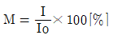
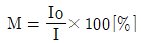
- M = (Io - I)× 100[%]
- M = (I - Io)× 100[%]
(정답률: 알수없음)
27. 전전자교환기의 통화로망에서 시분할스위치의 타임슬롯을 할당하기 위한 통화 메모리와 제어 메모리의 내용이 그림과 같을 때, 내부 타임슬롯의 #3에 기입될 데이터는 어느 것인가?
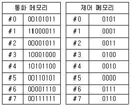
- 00001011
- 00110101
- 10001000
- 10101100
(정답률: 알수없음)
28. 전화망에서 통신이 이루어지기 위해서는 신호의 기능이 매우 중요하다. 다음중 중요한 신호의 기능이 아닌것은?
- 감시기능
- 선택기능
- 운용기능
- 음성 통화기능
(정답률: 알수없음)
29. 전자교환기의 기본 구성 내역이 아닌 것은?
- 통화로 장치
- 제어계 장치
- 중계선 정합장치
- 무선 송수신 장치
(정답률: 알수없음)
30. 다음중에서 교환기의 통화로계 분류에 포함되지 않는 것은?
- 위상 분할방식
- 주파수 분할방식
- 공간 분할방식
- 시 분할방식
(정답률: 알수없음)
31. TDX-10 교환기의 space-switch(s-sw)의 용량은?
- 32 × 32
- 48 × 48
- 64 × 64
- 16 × 16
(정답률: 알수없음)
32. 일반 통화로의 트래픽 밀도가 15[Erl], 평균 보류시간이 200초 일 때 가해진 호수는 얼마인가?
- 150 개
- 200 개
- 270 개
- 320 개
(정답률: 알수없음)
33. 전송회로에서 절대 레벨에 대한 설명으로 알맞지 않은 것은?
- 전원의 유기전압이 0.775[V]인 전압 레벨
- 부하양단에 걸리는 전압이 0.775[V]인 전압 레벨
- 회로에 흐르는 전류는 1.291[mA]이다
- 전원의 유기전압은 0.775[V]×2=1.55[V]이다.
(정답률: 알수없음)
34. PCM 전송에서 아나로그에서 디지털 펄스화 하는 과정을 나열하였다. 빈칸을 채우시오.
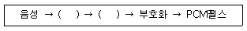
- 압축, 신장
- 표본화, 동기화
- 표본화, 양자화
- 양자화, 동기화
(정답률: 알수없음)
35. No.4ESS 교환기와 같은 프로세서를 쓰는 교환기는?
- M-10CN
- No 5ESS
- No 1AESS
- No 2ESS
(정답률: 알수없음)
36. 전화기 종류중 자석식과 공전식의 특징을 설명한 것중 맞지 않는 것은?
- 유도 선륜의 공통점은 평형 결선 망과 같이 측음방지 회로에 구성 되어 있다.
- 공전식 전화기는 송화기의 저항 변화에 의하여 단자전압이 변한다.
- 유도 선륜은 자석식에서는 1,2 차를 분리하여 사용한다.
- 공전식에서는 송화기를 선로에서 분리하여 코일의 권선비를 크게 한다.
(정답률: 알수없음)
37. 교환국의 수를 N이라 하고 망상망(그물형 네트워크 :Mesh Network)의 경로의 수를 Rs 라고 하면 Rs의 식은?
- Rs = N - 1
- Rs = N(N - 1)
- Rs = N + 1
- Rs = N(N-1)/2
(정답률: 알수없음)
38. 유럽식(CEPT)디지털 계위 (PDH- Plesiochoronous Digital Hierarchy)와 전송속도가 서로 맞지 않는 것은?
- E0 - 64 Kbps
- E1 - 2.048 Mbps
- E2 - 8.448 Mbps
- E3 - 44.736 Mbps
(정답률: 알수없음)
39. 탄소형 송화기의 탄소저항은 사용 년수가 길어짐에 따라 어떻게 변하는가?
- 증가한다.
- 감소한다.
- 일정하다.
- 불규칙하다.
(정답률: 알수없음)
40. 다음 그림은 수화기의 어떤 특성곡선을 나타낸 것인가?
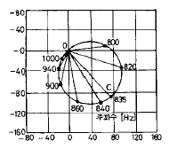
- 고정임피던스곡선
- 동임피던스곡선
- 자유임피던스곡선
- 주파수특성곡선
(정답률: 알수없음)
3과목: 전송선로개론
41. 공기 주입기의 건조공기 생산과정의 순서는?
- 팽창 → 건조 → 압축
- 팽창 → 압축 → 냉동
- 압축 → 팽창 → 냉동
- 압축 → 냉동 → 팽창
(정답률: 알수없음)
42. 분포 정수회로에서 직렬 임피이던스를 課,병렬 어드미턴스를 耆라 할때 선로의 전파정수는 어느 것인가? (문제 오류로 정확한 내용을 아시는 분께서는 오류신고를 통하여 내옹 작성 부탁 드립니다. 정답은 1번입니다.)
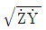
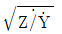
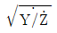
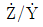
(정답률: 알수없음)
43. 다음중 PCM 통신방식의 특징이 아닌 것은?
- 파형왜곡 잡음에 대하여 강하다.
- 협대역 전송선로로 사용함이 적합하다.
- 통신의 비밀이 유지된다.
- 단국장치에 고급 필터가 불필요하다.
(정답률: 알수없음)
44. 광섬유에서 빛이 통과하는 주통로는?
- 코아(core)
- 크래드(clad)
- 코아(core)와 크래드(clad)
- 코아(core)와 크래드(clade) 경계면
(정답률: 알수없음)
45. 동축케이블 선로의 저항에 대한 감쇠량 α 는 사용주파수 f와 어떠한 관계가 있는가?
- α 는 f에 정비례한다.
- α 는 f의 평방근에 비례한다.
- α 는 f의 제곱에 반비례한다.
- α 는 f에 관계없이 항상 일정하다.
(정답률: 알수없음)
46. 전송단위인 [㏈m]과 관계없는 것은?
- 1[㎽]
- 0.775[V]
- 1.72[Ω ]
- 1.29[㎃]
(정답률: 알수없음)
47. 통신선로의 전력유도 방지책으로서 부적절한 것은?
- 양선로의 상호 거리를 최대한 멀리한다.
- 양선로를 가능한한 평행을 유지하도록 한다.
- 금속 차폐된 선로를 사용한다.
- 대지 평형도를 개선한다.
(정답률: 알수없음)
48. 잡음전압측정기의 전압레인지를 20에 두었을 때 잡음전압계의 지시가 0.8[mV]이면 실제의 잡음전압값은?
- 26[mV]
- 16[mV]
- 2.6[mV]
- 1.6[mV]
(정답률: 알수없음)
49. 폼스킨케이블의 특성이 아닌 것은?
- 비음성 신호의 전송에만 적합하도록 개발되었다.
- 심선절연을 위해 발포폴리에치렌을 피복하였다.
- 심선피복에 색상을 입혀 심선대조가 용이하다.
- 젤리충진형과 젤리비충진형이 있다.
(정답률: 알수없음)
50. 전송선로의 위상속도 Vp는? (단, ω : 각주파수 β : 위상정수 Ｒ, Ｌ,Ｃ : 단위 길이당 저항, 인덕턴스, 커패시턴스)
- Vp = ω β
- Vp = ω β /(R+L+C)
- Vp =1/RC
- Vp =1/√LC
(정답률: 알수없음)
51. 국간 중계 케이블에 있어서 사용 주파수가 높고 특성 임피이던스가 낮을 때에는 어떤 누화가 발생되는가?
- 정전결합에 의한 누화
- 전자결합에 의한 누화
- 간접누화
- 복소누화
(정답률: 알수없음)
52. 전화 케이블의 내부에 삽입되어 있는 테이프의 기능에 대한 설명들로 적합하지 않은 것은?
- 종이 테이프는 케이블 코어를 압권(壓卷)해서 흩어지는 것을 방지한다.
- 고무 테이프는 케이블의 외피를 압출(押出) 피복시키는 공정에서 받는 열을 차단한다.
- 강(鋼) 테이프는 습기 침투방지 및 외력에 의한 기계적인 보호와 전자차폐등의 역할을 한다.
- 알루미늄 테이프는 산화방지 및 심선 상호간의 누화현상을 방지한다.
(정답률: 알수없음)
53. 전송선로의 특성 임피이던스가 50[Ω ]이고 부하저항이 200[Ω]일때 이 전송계의 전압 정재파비는 얼마인가?
- 1
- 2
- 3
- 4
(정답률: 알수없음)
54. 광통신에 사용되는 광선의 성질에 대해서 기술한 내용 중 맞지 않는 것은?
- 광선은 직진한다.
- 광선의 진행은 가역적이다.
- 광선은 다른 광선의 존재와 유관하다.
- 광선의 입사각도와 반사각도는 같고, 동일한 평면내에 있다.
(정답률: 알수없음)
55. 지하선로시설의 관로방식에서 표준 지하관로는?
- 콘크리트관
- 흄관
- 합성수지관
- 강철관
(정답률: 알수없음)
56. 광케이블의 절단면에서 보면 가운데에 중심 지지선이 있는데 이의 사용 목적으로 알맞은 것은?
- 광심선의 케이블내 움직임을 방지하기 위하여
- 광심선의 심층 구분을 위하여
- 광심선의 기계적 강도를 보강하기 위하여
- 광심선의 접속을 용이하게 하기 위하여
(정답률: 알수없음)
57. 광섬유에 대한 다음 설명중 잘못된 것은 어느 것인가?
- 다중 모드 광섬유의 코어 직경은 125[㎛]정도이다.
- 단일 모드와 다중 모드로 크게 구분할 수 있다.
- 1.3[㎛]파장대에서 분산 특성이 가장 양호이다.
- 코어를 크래드가 둘러싸고 있는 단면 구조를 갖는다.
(정답률: 알수없음)
58. 디지틀 신호방식에 가장 적합한 케이블은?
- 스탈페스(ST)케이블
- 웰만델(WT)케이블
- 스크린(SC)케이블
- 피브씨절연(PVC)케이블
(정답률: 알수없음)
59. 케이블 반송중계기의 간격을 결정하는데 중요하지 않은 것은?
- 중계기의 출력레벨
- 중계증폭기의 잡음지수
- 전송선로의 손실
- 선로의 군지연 의곡
(정답률: 알수없음)
60. 다중 모드 광섬유 케이블의 접속손실과 가장 큰 관련이 있는 광섬유 특성은?
- 내부손실
- 대역폭
- 클래딩 직경
- 코아 직경
(정답률: 알수없음)
4과목: 전자계산기일반 및 선로설비기준
61. 기간통신사업자가 전기통신업무에 제공되는 선로 등을 설치하기 위하여 타인의 토지 등의 사용에 관하여 틀리게 기술된 것은?
- 사유의 토지를 사용하는 경우에는 소유자 또는 점유자와 사전 협의하여야 한다.
- 토지 등의 사용, 출입시 발생하는 손실은 보상하여야한다.
- 사유의 토지 등을 사용하는 경우에는 그에 대한 보상을 하지 않는다.
- 토지 등의 사용에 대한 협의가 성립되지 않는 경우에는 토지수용법이 정하는바에 의하여 사용할 수 있다.
(정답률: 알수없음)
62. 마이크로프로세서의 주소지정방식중 옳지 않은 것은?
- 즉치주소방식(immediate addressing)
- 간접주소방식(indirect addressing)
- 참조주소방식(reference addressing)
- 인덱스주소방식(indexing addressing)
(정답률: 알수없음)
63. 관로 및 케이블을 철도· 고속도로의 횡단구간등 특수한 구간에 매설하는 경우 지면에서 관로상단까지의 거리는 얼마 이상 유지함이 적합한가?
- 20[cm] 이상
- 60[cm] 이상
- 100[cm] 이상
- 150[cm] 이상
(정답률: 알수없음)
64. 컴퓨터 시스템 성능 평가 요인들 중 해당되지 않는 것은?
- program size
- reliability
- throughput
- turnaround time
(정답률: 알수없음)
65. 전기통신 기본법의 제정 목적과 관계가 깊은 것은?
- 조세수입 증대
- 공공복리 증진
- 사업의 적정기도
- 경영의 효율적 관리
(정답률: 알수없음)
66. 다음 중 통신위원회의 기능이 아닌 것은?
- 전기통신사업자간 공정한 경쟁환경의 조성
- 통신역무 이용자의 권익보호에 관한 사항의 심의
- 중요통신정책의 수립· 시행에 관한 사항의 의결
- 전기통신사업자간 분쟁의 알선
(정답률: 알수없음)
67. ASCII 코드에서 존(ZONE) 비트로 사용되는 비트의 수는?
- 1
- 2
- 3
- 4
(정답률: 알수없음)
68. 정보통신공사업을 영위하고자 하는 자는 어떤 절차를 거쳐야 하는가?
- 정보통신부장관의 허가를 받아야 한다.
- 정보통신부장관에게 등록하여야 한다.
- 한국정보통신공사협회장에게 신고하여야 한다.
- 통신위원회의 승인을 얻어야 한다.
(정답률: 알수없음)
69. 컴퓨터 시스템에서 명령형식을 보통 1-주소방식, 2-주소방식, 3-주소방식으로 분류하는 기준이 되는 것은?
- 기억 장치의 용량
- 명령어의 수
- 오퍼랜드의 수
- 레지스터의 수
(정답률: 알수없음)
70. 발주자로부터 공사를 도급받은 공사업자를 무엇이라고 하는가?
- 도급
- 하도급
- 수급인
- 하수급인
(정답률: 알수없음)
71. 서브루틴에 대한 설명으로 틀린 것은?
- 자주 사용되는 일련의 프로그램은 서브루틴으로 구성한다.
- 인터럽트 발생시의 처리프로그램은 서브루틴으로 구성한다.
- 일반적으로 I/O 프로그램은 서브루틴으로 구성한다.
- 부프로그램은 주프로그램과 동시에 수행되도록 서브루틴으로 구성한다.
(정답률: 알수없음)
72. 전화망의 음량손실의 객관적 척도는?
- 통화당량
- 음량정격
- 라우드네스
- 통화품질
(정답률: 알수없음)
73. 다음 중에서 일반적으로 프로그램을 수행하는데 필요하지 않는 장치는 어느 것인가?
- 보조기억장치
- 연산장치
- 제어장치
- 기억장치
(정답률: 알수없음)
74. 정보통신부장관이 전기통신기술 진흥을 위하여 수립 시행하는 시행계획에 포함되지 않는 것은?
- 전기통신 기술의 연구, 개발에 관한 사항
- 새로운 전기통신기술 및 전기통신방식의 채택에 관한 사항
- 전기통신기술의 국제 협력에 관한 사항
- 정보제공의 규정에 의한 기준의 승인에 관한 사항
(정답률: 알수없음)
75. 입출력장치와 마이크로프로세서 사이의 접속장치(Interface)에서 악수하기 (Handshaking)라는 뜻은?
- CPU의 병렬데이터를 I/O장치에 맞추어 직렬 데이터로 변환하기
- CPU와 I/O 장치 사이의 제어신호 교환하기
- I/O장치의 전압높이를 CPU에 맞추기
- CPU가 사용하지 않는 버스를 I/O 장치에서 제어하기
(정답률: 알수없음)
76. 정보통신부장관은 전기통신역무의 전부 또는 일부의 제한 또는 정지를 명하였을 때 그 제한 또는 정지의 범위 및 정도에 따라 제일 먼저 통화 시킬 수 있는 역무는?
- 군사 및 치안 업무
- 외국 공관 업무
- 의료 기관 업무
- 재해 구호 업무
(정답률: 알수없음)
77. 2진수 0111을 그레이 코드(Gray code)로 바꾸면 무엇인가?
- 1010
- 0100
- 0000
- 1111
(정답률: 알수없음)
78. 전자계산기에서 계산속도가 빠른 단위 순서대로 나열된 것은?
- ps-ns-μs-ms
- μs-ps-ns-ms
- ms-μs-ns-ps
- ms-ns-μs-ps
(정답률: 알수없음)
79. 선로설비의 회선 상호간 절연저항은 얼마이어야 하는가?
- 500[V] 절연저항계로 측정하여 10[MΩ ] 이상일 것
- 50[V] 절연저항계로 측정하여 100[MΩ ] 이상일 것
- 5000[V] 절연저항계로 측정하여 1[MΩ ] 이상일 것
- 100[V] 절연저항계로 측정하여 10[MΩ ] 이상일 것
(정답률: 알수없음)
80. 선형 리스트중 마지막으로 입력한 자료가 제일 먼저 출력되는 LiFO(Last in first out)구조는?
- 트리
- 스택
- 큐
- 섹터
(정답률: 알수없음)
따라서, 베이스 전류가 IB = 10[㎃]이고 전류증폭율 α가 0.98이므로, 콜렉터 전류 Ic는 다음과 같이 계산됩니다.
Ic = α × Ib + Ico
= 0.98 × 10[㎃] + 100[㎂]
= 9.8[㎃] + 0.1[㎃]
= 9.9[㎃]
≈ 495[㎃]
따라서, 정답은 "495[㎃]"입니다.